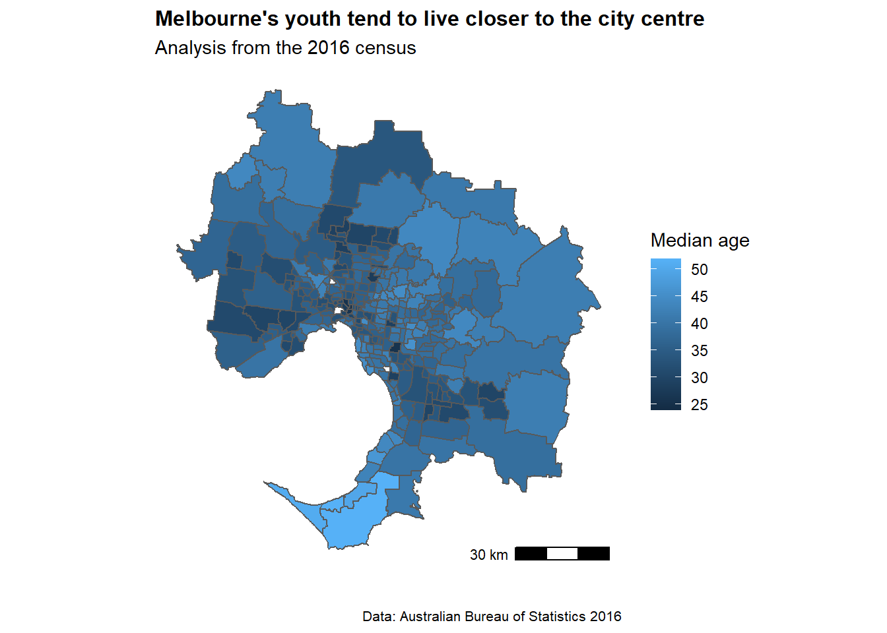
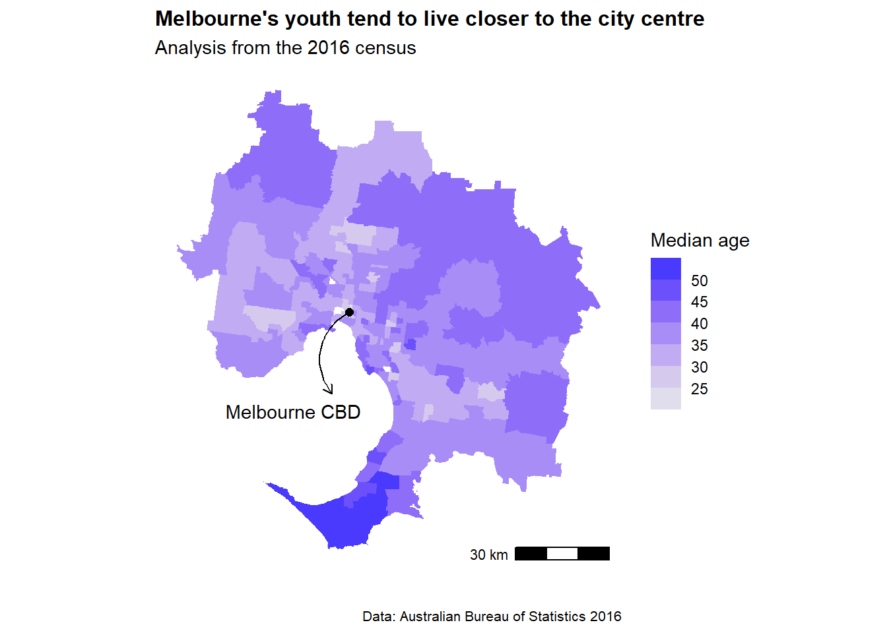
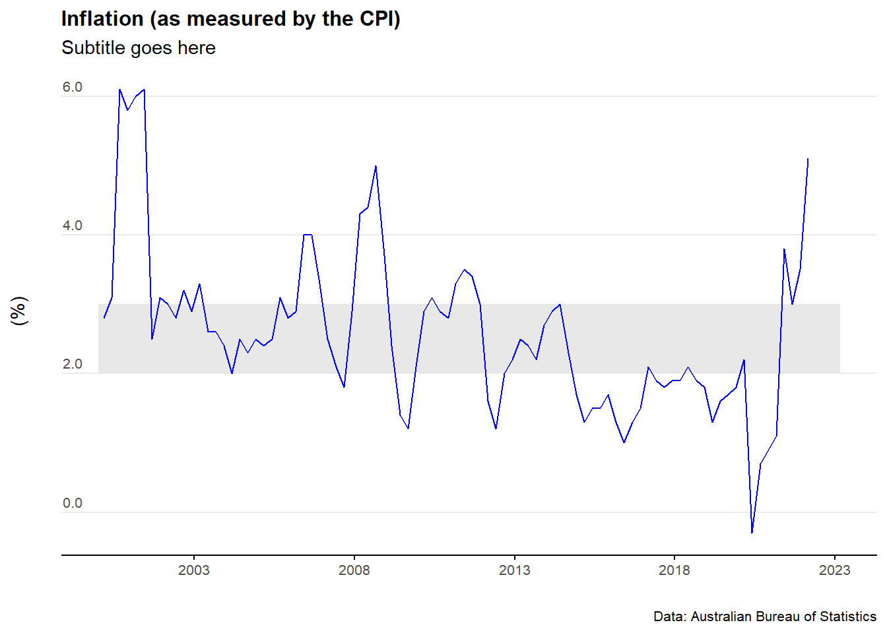
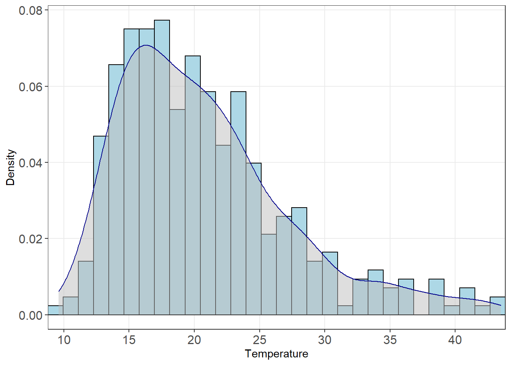
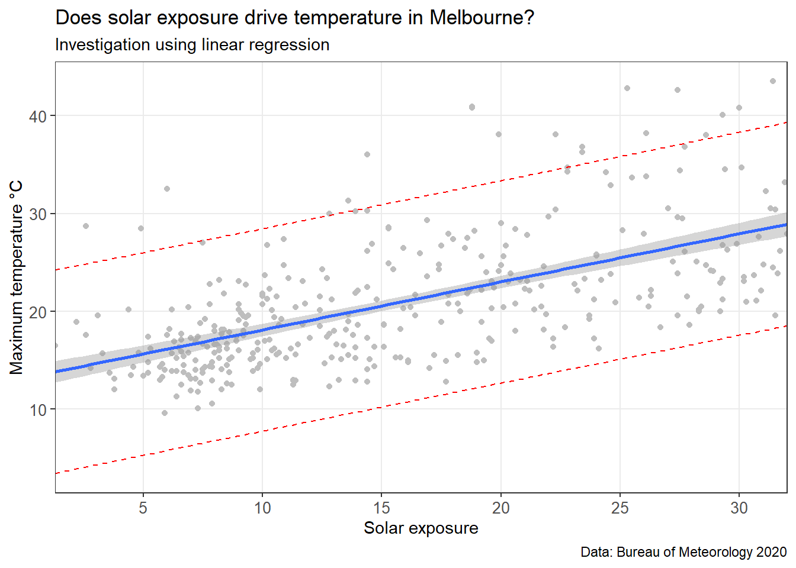
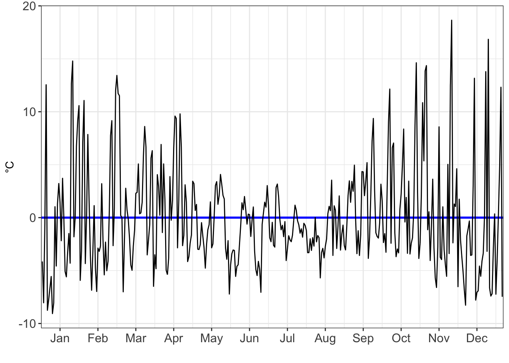
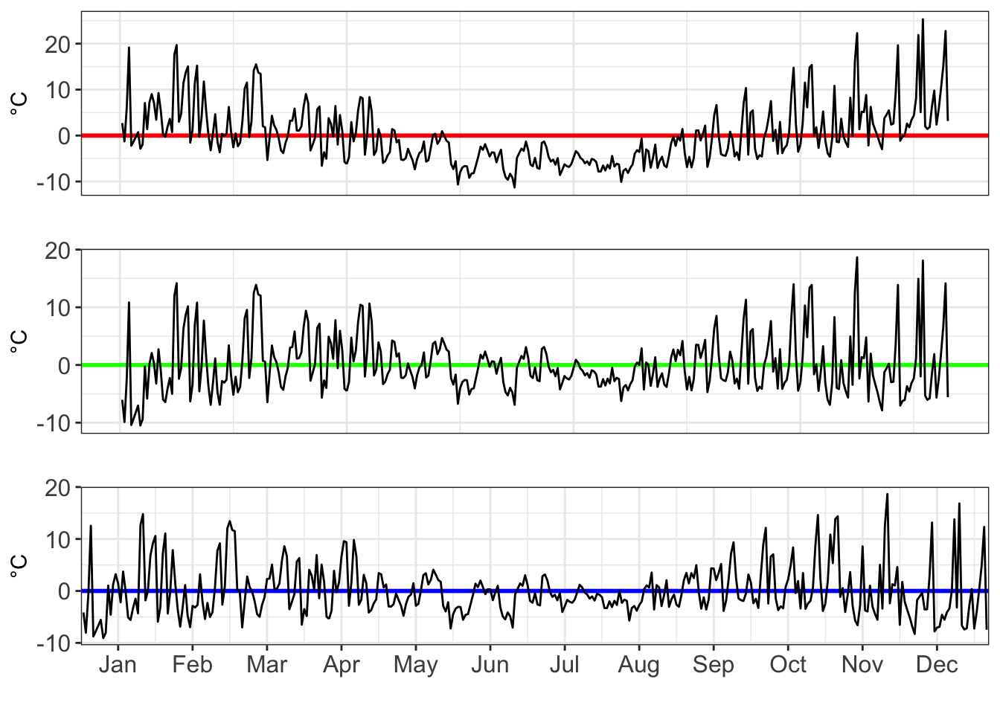

Chapter 4 Basic modelling in R
Creating a model is an essential part of forecasting and data analysis. I’ve put together a quick guide on my process for modelling data and checking model fit. The source data I use in this example is Melbourne’s weather record over a 12 month period. Daily temperature is based on macroscale weather and climate systems, however many observable measurements are correlated (i.e. hot days tend to have lots of sunshine). This makes using weather data great for model building.
4.1 Source, format, and plot data
Before we get started, it is useful to have some packages up and running.
#Useful packages for regression
library(readr)
library(readxl)
library(ggplot2)
library(dplyr)
library(tidyverse)
library(lubridate)
library(modelr)
library(cowplot)I’ve put together a csv file of weather observations in Melbourne in 2019. We begin our model by downloading the data from Github.
#Input data
url <-"https://raw.githubusercontent.com/charlescoverdale/predicttemperature/master/MEL_weather_2019.csv"
#We'll read this data in as a dataframe. The 'check.names' function set to false means the funny units that the BOM use for column names won't affect the import.
MEL_weather_2019 <- read.csv(url, check.names = F)
head(MEL_weather_2019)This data is relatively clean. One handy change to make is to make the date into a dynamic format (to easily switch between months, years, etc).
#Add a proper date column
MEL_weather_2019 <- MEL_weather_2019 %>%
mutate(Date = make_date(Year, Month, Day))We also notice that some of the column names have symbols in them. This can be tricky to work with, so let’s rename some columns into something more manageable.
#Rename key df variables
names(MEL_weather_2019)[4]<- "Solar_exposure"
names(MEL_weather_2019)[5]<- "Rainfall"
names(MEL_weather_2019)[6]<- "Max_temp"
head(MEL_weather_2019)We’re aiming to investigate if other weather variables can predict maximum temperatures. Solar exposure seems like a plausible place to start. We start by plotting the two variables to if there is a trend.
#Plot the data
MEL_temp_investigate <- ggplot(MEL_weather_2019)+
geom_point(aes(y=Max_temp, x=Solar_exposure),col="grey")+
labs(title = "Does solar exposure drive temperature in Melbourne?",
caption = "Data: Bureau of Meteorology 2020") +
xlab("Solar exposure")+
ylab("Maximum temperature °C")+
scale_x_continuous(expand=c(0,0))+
theme_bw()+
theme(axis.text=element_text(size=10))+
theme(panel.grid.minor = element_blank())
MEL_temp_investigate
Eyeballing the chart above, there seems to be a correlation between the two data sets. We’ll do one more quick plot to analyse the data. What is the distribution of temperature?
ggplot(MEL_weather_2019, aes(x=Max_temp)) +
geom_histogram(aes(y=..density..), colour="black", fill="lightblue")+
geom_density(alpha=.5, fill="grey",colour="darkblue")+
scale_x_continuous(breaks=c(5,10,15,20,25,30,35,40,45),
expand=c(0,0))+
xlab("Temperature")+
ylab("Density")+
theme_bw()+
theme(axis.text=element_text(size=12))+
theme(panel.grid.minor = element_blank())
We can see here the data is right skewed (i.e. the mean will be greater than the median). We’ll need to keep this in mind. Let’s start building a model.
4.2 Build a linear model
We start by looking whether a simple linear regression of solar exposure seems to be correlated with temperature. In R, we can use the linear model (lm) function.
#Create a straight line estimate to fit the data
temp_model <- lm(Max_temp~Solar_exposure, data=MEL_weather_2019)4.3 Analyse the model fit
Let’s see how well solar exposure explains changes in temperature
#Call a summary of the model
summary(temp_model)The adjusted R squared value (one measure of model fit) is 0.3596. Furthermore the coefficient of our solar_exposure variable is statistically significant.
4.4 Compare the predicted values with the actual values
We can use this lm function to predict values of temperature based on the level of solar exposure. We can then compare this to the actual temperature record, and see how well the model fits the data set.
#Use this lm model to predict the values
MEL_weather_2019 <- MEL_weather_2019 %>%
mutate(predicted_temp=predict(temp_model,newdata=MEL_weather_2019))
#Calculate the prediction interval
prediction_interval <- predict(temp_model,
newdata=MEL_weather_2019,
interval = "prediction")
summary(prediction_interval)
#Bind this prediction interval data back to the main set
MEL_weather_2019 <- cbind(MEL_weather_2019,prediction_interval)
MEL_weather_2019Model fit is easier to interpret graphically. Let’s plot the data with the model overlaid.
#Plot a chart with data and model on it
MEL_temp_predicted <-
ggplot(MEL_weather_2019)+
geom_point(aes(y=Max_temp, x=Solar_exposure),
col="grey")+
geom_line(aes(y=predicted_temp,x=Solar_exposure),
col="blue")+
geom_smooth(aes(y=Max_temp, x= Solar_exposure),
method=lm)+
geom_line(aes(y=lwr,x=Solar_exposure),
colour="red", linetype="dashed")+
geom_line(aes(y=upr,x=Solar_exposure),
colour="red", linetype="dashed")+
labs(title =
"Does solar exposure drive temperature in Melbourne?",
subtitle = 'Investigation using linear regression',
caption = "Data: Bureau of Meteorology 2020") +
xlab("Solar exposure")+
ylab("Maximum temperature °C")+
scale_x_continuous(expand=c(0,0),
breaks=c(0,5,10,15,20,25,30,35,40))+
theme_bw()+
theme(axis.text=element_text(size=10))+
theme(panel.grid.minor = element_blank())
MEL_temp_predicted
This chart includes the model (blue line), confidence interval (grey band around the blue line), and a prediction interval (red dotted line). A prediction interval reflects the uncertainty around a single value (put simple: what is the reasonable upper and lower bound that this data point could be estimated at?). A confidence interval reflects the uncertainty around the mean prediction values (put simply: what is a reasonable upper and lower bound for the blue line at this x value?). Therefore, a prediction interval will be generally much wider than a confidence interval for the same value.
4.5 Analyse the residuals
#Add the residuals to the series
residuals_temp_predict <- MEL_weather_2019 %>%
add_residuals(temp_model)Plot these residuals in a chart.
residuals_temp_predict_chart <-
ggplot(data=residuals_temp_predict,
aes(x=Solar_exposure, y=resid), col="grey")+
geom_ref_line(h=0,colour="blue", size=1)+
geom_point(col="grey")+
xlab("Solar exposure")+
ylab("Maximum temperature (°C)")+
theme_bw() +
labs(title = "Residual values from the linear model")+
theme(axis.text=element_text(size=12))+
scale_x_continuous(expand=c(0,0))
residuals_temp_predict_chart
4.6 Linear regression with more than one variable
The linear model above is *okay*, but can we make it better? Let’s start by adding in some more variables into the linear regression.
Rainfall data might assist our model in predicting temperature. Let’s add in that variable and analyse the results.
temp_model_2 <-
lm(Max_temp ~ Solar_exposure + Rainfall, data=MEL_weather_2019)
summary(temp_model_2)We can see that adding in rainfall made the model better (R squared value has increased to 0.4338).
Next, we consider whether solar exposure and rainfall might be related to each other, as well as to temperature. For our third temperature model, we add an interaction variable between solar exposure and rainfall.
temp_model_3 <- lm(Max_temp ~ Solar_exposure +
Rainfall +
Solar_exposure:Rainfall,
data=MEL_weather_2019)
summary(temp_model_3)We now see this variable is significant, and improves the model slightly (seen by an adjusted R squared of 0.4529).
4.7 Fitting a polynomial regression
When analysing the above data set, we see the issue is the sheer variance of temperatures associated with every other variable (it turns out weather forecasting is notoriously difficult).
However we can expect that temperature follows a non-linear pattern throughout the year (in Australia it is hot in January-March, cold in June-August, then starts to warm up again). A linear model (e.g. a straight line) will be a very bad model for temperature — we need to introduce polynomials.
For simplicity, we will introduce a new variable (Day_number) which is the day of the year (e.g. 1 January is #1, 31 December is #366).
MEL_weather_2019 <- MEL_weather_2019 %>%
mutate(Day_number=row_number())
head(MEL_weather_2019)Using the same dataset as above, let’s plot temperature in Melbourne in 2019.
MEL_temp_chart <-
ggplot(MEL_weather_2019)+
geom_line(aes(x = Day_number, y = Max_temp)) +
labs(title = 'Melbourne temperature profile',
subtitle = 'Daily maximum temperature recorded in Melbourne in 2019',
caption = "Data: Bureau of Meteorology 2020") +
xlab("Day of the year")+
ylab("Temperature")+
theme_bw()
MEL_temp_chart
We can see we’ll need a non-linear model to fit this data.
Below we create a few different models. We start with a normal straight line model, then add an x² and x³ model. We then use these models and the ‘predict’ function to see what temperatures they forecast based on the input data.
#Create a straight line estimate to fit the data
poly1 <- lm(Max_temp ~ poly(Day_number,1,raw=TRUE),
data=MEL_weather_2019)
summary(poly1)
#Create a polynominal of order 2 to fit this data
poly2 <- lm(Max_temp ~ poly(Day_number,2,raw=TRUE),
data=MEL_weather_2019)
summary(poly2)
#Create a polynominal of order 3 to fit this data
poly3 <- lm(Max_temp ~ poly(Day_number,3,raw=TRUE),
data=MEL_weather_2019)
summary(poly3)
#Use these models to predict
MEL_weather_2019 <- MEL_weather_2019 %>%
mutate(poly1values=predict(poly1,newdata=MEL_weather_2019))%>%
mutate(poly2values=predict(poly2,newdata=MEL_weather_2019))%>%
mutate(poly3values=predict(poly3,newdata=MEL_weather_2019))
head(MEL_weather_2019)In the table above we can see the estimates for that data point from the various models.
To see how well the models did graphically, we can plot the original data series with the polynominal models overlaid.
#Plot a chart with all models on it
MEL_weather_model_chart <-
ggplot(MEL_weather_2019)+
geom_line(aes(x=Day_number, y= Max_temp),col="grey")+
geom_line(aes(x=Day_number, y= poly1values),col="red") +
geom_line(aes(x=Day_number, y= poly2values),col="green")+
geom_line(aes(x=Day_number, y= poly3values),col="blue")+
#Add text annotations
geom_text(x=10,y=18,label="data series",col="grey",hjust=0)+
geom_text(x=10,y=16,label="linear",col="red",hjust=0)+
geom_text(x=10,y=13,label=parse(text="x^2"),col="green",hjust=0)+
geom_text(x=10,y=10,label=parse(text="x^3"),col="blue",hjust=0)+
labs(title = "Estimating Melbourne's temperature",
subtitle = 'Daily maximum temperature recorded in Melbourne in 2019',
caption = "Data: Bureau of Meteorology 2020") +
xlim(0,366)+
ylim(10,45)+
scale_x_continuous(breaks=
c(15,45,75,105,135,165,195,225,255,285,315,345),
labels=c("Jan", "Feb", "Mar", "Apr", "May", "Jun", "Jul", "Aug", "Sep", "Oct", "Nov", "Dec"),
expand=c(0,0),
limits=c(0,366)) +
scale_y_continuous(breaks=c(10,15,20,25,30,35,40,45)) +
xlab("")+
ylab("°C")+
theme_bw()+
theme(axis.text=element_text(size=12))+
theme(panel.grid.minor = element_blank())
MEL_weather_model_chartWe can see in the chart above the polynomial models do much better at fitting the data. However, they are still highly variant.
Just how variant are they? We can look at the residuals to find out. The residuals is the gap between the observed data point (i.e. the grey line) and our model.
#Get the residuals for poly1
residuals_poly1 <- MEL_weather_2019 %>%
add_residuals(poly1)
residuals_poly1_chart <-
ggplot(data=residuals_poly1,aes(x=Day_number, y=resid))+
geom_ref_line(h=0,colour="red", size=1)+
geom_line()+
xlab("")+
ylab("°C")+
theme_bw()+
theme(axis.text=element_text(size=12))+
theme(axis.ticks.x=element_blank(),
axis.text.x=element_blank())
residuals_poly1_chart#Get the residuals for poly2
residuals_poly2 <- MEL_weather_2019%>%
add_residuals(poly2)
residuals_poly2_chart <- ggplot(data=residuals_poly2,aes(x=Day_number, y=resid))+
geom_ref_line(h=0,colour="green", size=1)+
geom_line()+
xlab("")+
ylab("°C")+
theme_bw()+
theme(axis.text=element_text(size=12))+
theme(axis.ticks.x=element_blank(),
axis.text.x=element_blank())
residuals_poly2_chart
#Get the residuals for poly3
residuals_poly3 <- MEL_weather_2019 %>%
add_residuals(poly3)
residuals_poly3_chart <- ggplot(data=residuals_poly3,aes(x=Day_number, y=resid))+
geom_ref_line(h=0,colour="blue", size=1)+
geom_line()+
theme_bw()+
theme(axis.text=element_text(size=12))+
scale_x_continuous(breaks=
c(15,45,75,105,135,165,195,225,255,285,315,345),
labels=c("Jan", "Feb", "Mar", "Apr", "May", "Jun", "Jul", "Aug", "Sep", "Oct", "Nov", "Dec"),
expand=c(0,0),
limits=c(0,366))+
xlab("")+
ylab("°C")
residuals_poly3_chart
three_charts_single_page <- plot_grid(
residuals_poly1_chart,
residuals_poly2_chart,
residuals_poly3_chart,
ncol=1,nrow=3,label_size=16)
three_charts_single_page
As we move from a linear, to a x², to a x³ model, we see the residuals decrease in volatility.